transistors for an
transistors for an  -input gate, but ratioed —
-input gate, but ratioed — Method
- Pull-up current with output low (PMOS saturated):
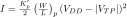
. - Replace the worst-case conducting pull-down path by an equivalent transistor:
 in series of
in series of 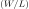
→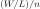
; in parallel → sum. - Impose
 (e.g.
(e.g. 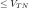
of the next gate) in the triode equation and solve for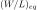
or for the maximum. - Static power
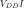
times the fraction of time the output is low.
Worked example (exam July 2024)
-input NAND,
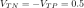
V,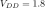
V,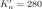
,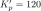
µA/V²,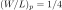
, each NMOS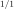
. Pull-up: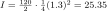
µA. Equivalent pull-down at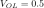
V: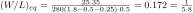
. With series devices of : 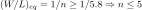
.Comparison with static CMOS
| aspect | static CMOS | pseudo-NMOS |
|---|---|---|
| transistors | 2N | N + 1 |
| V_OL | 0 | > 0 (ratioed) |
| static power | ≈ 0 (leakage) | V_DD·I when output low |
| fan-in speed | slow for wide NOR | fast wide NOR (parallel NMOS) |
Engineering applications
Wide NOR decoders and PLAs, address comparators, places where area matters more than standby power.
Pitfall
Pseudo-NMOS NAND is the worst choice for large fan-in (series pull-down fights a constant pull-up); NOR is where it shines.